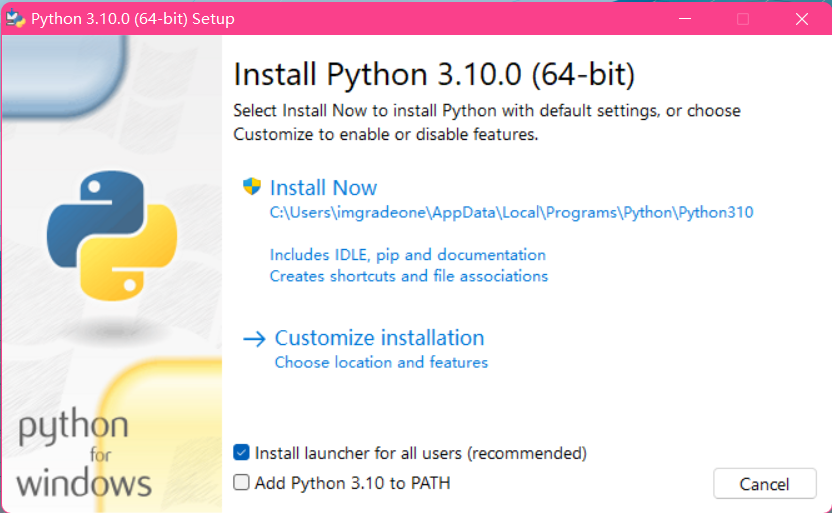
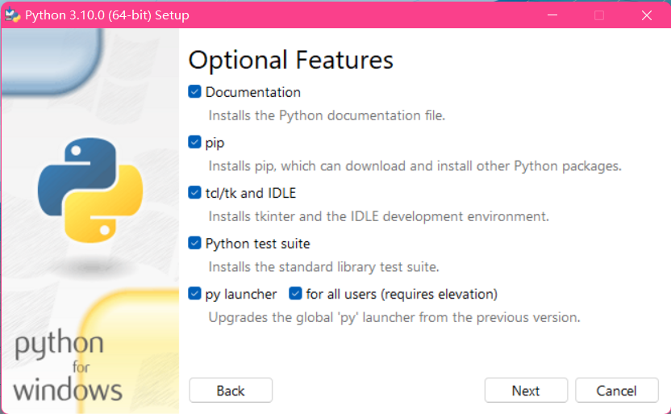
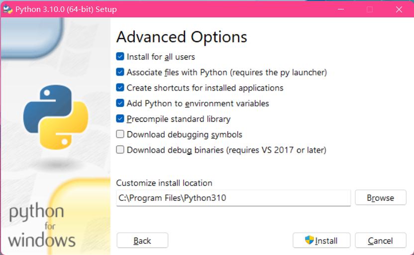
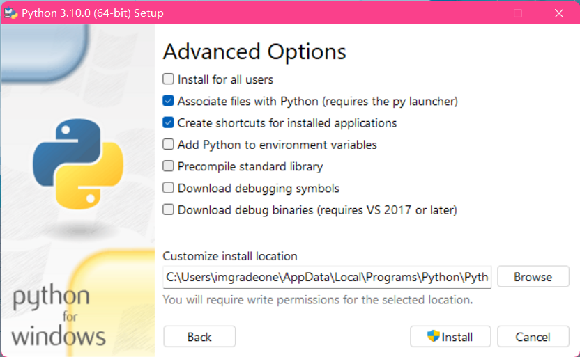
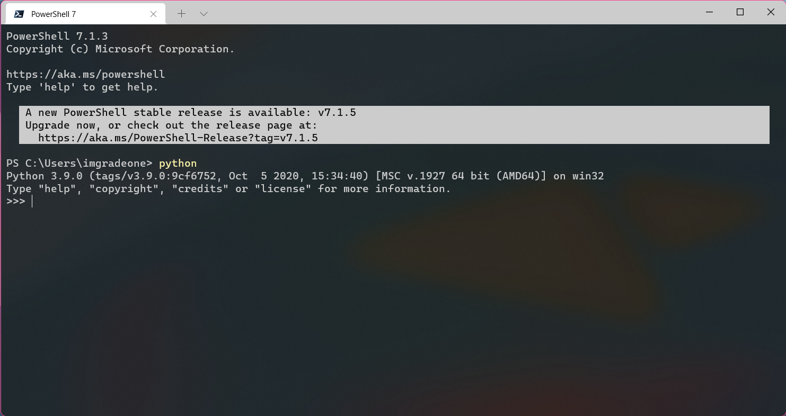
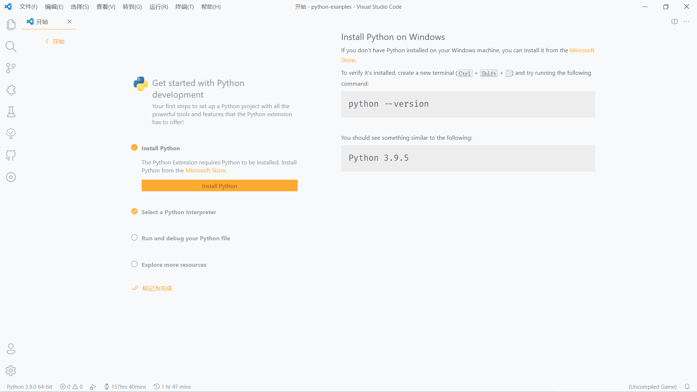
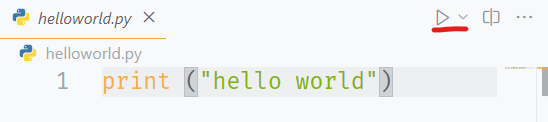
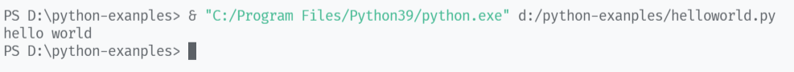

第 1 课：Python 入门
认识 Python
Python 是一种广泛使用的解释型、高级和通用的编程语言，可以应用于以下领域：
- Web 和 Internet 开发
- 科学计算和统计
- 人工智能
- 桌面界面开发
- 软件开发
- 后端开发
- 网络爬虫
Python 支持多种编程范型，包括函数式、指令式、结构化、面向对象和反射式编程。它拥有动态类型系统和垃圾回收功能，能够自动管理内存使用，并且其本身拥有一个巨大而广泛的标准库。
Python 的设计哲学（“优雅”、“明确”、“简单”）强调代码的可读性和简洁的语法，尤其是使用空格缩进划分代码块。相比于 C 或 Java，Python 让开发者能够用更少的代码表达想法。不管是小型还是大型程序，该语言都试图让程序的结构清晰明了。1
安装 Python
注意
本文仅以 Windows 环境作为讲解，安装器截图以 Python 3.10 安装器作为示例。Linux 环境下一般使用 python3 命令即可调用。
如果您身处桂中学校云机房，Python 3.7.3（32 位）应该已经预装，但如果没有预装的话，你可以从 Revocloud 获取带有补充 DLL 文件的 Python 3.7.6（32 位）。安装前请先把压缩包内的两个 DLL 文件放至 system32 文件夹内。
另外，经 反馈，由于 Python 3.10 缺失对应版本的库，请您选用 Python 3.9.7 或更旧版本。
注意！ Python 3.9 及更高版本已不再支持 Windows 7 及更旧版本的系统，如有需要，请使用 Windows 8.1 及更新的系统或下载 Python 3.8.12。
当然，你也许可以尝试一下 Miniconda，但本系列教程暂不考虑 Miniconda。
-
从 Python 官网 或 淘宝 NPM 镜像源 下载适宜的 Python 版本（如更为稳定的 3.9）。
警告
我们强烈 不建议 从 Microsoft Store 获取 Python。虽然我们也拦不住你，但是，最好别这么做。
另外，经 反馈，由于 Python 3.10 缺失对应版本的库，请您选用 Python 3.9.7 或更旧版本。 -
运行安装包。您应该会看到如下界面。请无视版本号差异。
 -
点击
Customize installation（自定义安装）选项。提示
你可以先勾选
Add Python to PATH并直接开始安装，但我建议使用Customize installation选项进行自定义安装。 -
保持
Optional Features页面下的选项为全选即可，然后点击Next。
 -
在
Advanced Options下勾选Install for all users（推荐）和Add Python to environment variables（必须）。其余的debugging tools按需选择，安装目录按需修改。
查看配置前截图

-
点击
Install并允许 Python 安装器使用管理员权限（若启用了 PAC），等待安装完成。 -
安装完成后，先别急着关闭安装器，选择
Disable path length limit来禁用 Windows 原本的 260 字符环境变量限制，以便日后开发。（这一点对于前序未使用Install for all users选项的用户来说尤为重要，但无论如何，你都应该点击这个按钮。）如果我忘记按这个按钮了呢？
你可以新建一个
.py文件，输入以下内容并运行该文件：import winreg winreg.SetValueEx(winreg.CreateKey(winreg.HKEY_LOCAL_MACHINE, r'SYSTEM\CurrentControlSet\Control\FileSystem'), 'LongPathsEnabled', None, winreg.REG_DWORD, 1)或者，你也可以直接使用
regedit编辑注册表：
位置：\HKEY_LOCAL_MACHINE\SYSTEM\CurrentControlSet\Control\FileSystem
名称：LongPathsEnabled
键值：1 -
运行任意一款终端程序（cmd / PowerShell / ...），输入
python命令，如果出现了类似如下界面（即 Python <版本号> 和>>>），那么 Python 就安装成功并正确配置了。
提示
如果你在 Windows 系统中安装了多个 Python 环境，那么你可以使用
py启动器启动相应版本的 Python，例如：# 启动 Python 3 py -3 # 启动 Python 3.9 py -3.9 # 列出所有已安装的 Python 及其对应目录 py -0p py --list-paths
选择文本编辑器或 IDE
对于初学者，我们建议您使用基本的文本编辑器来简单地编辑 Python 脚本文件。在此我将推荐部分编辑器：
- Visual Studio Code + Python 插件 - 美观现代的代码编辑器，但 不适合学校云机房使用。
- Notepad3 - 轻量简单的文本 / 代码编辑器，适合轻度 Python 代码编写，适合在学校云机房使用。
- Python IDLE - Python 预装的编辑器，功能简单，调试功能偏弱，但轻量。
- Sublime Text - 简单强大的编辑器，但该软件本质上为付费软件。
编写第一个 Hello World 程序
提示
本系列教程将以 Visual Studio Code + Python 插件为例进行开发。对于其他编辑器，您可能需要通过命令行运行 Python 脚本。您可以查看“等一下！我使用的不是 VS Code！”部分来了解详情。
-
启动 Visual Studio Code（或其他编辑器）。
-
安装 Python 插件。如果你已经安装 Python 插件，那么打开 Python 文件后，插件会自动激活。
你也许能看到开始页面中的Get started with Python development板块，此时 Python 插件已经可以正常使用了。
 -
新建一个 Python 文件（后缀为
.py），输入以下内容并保存：print ("hello world") -
点击窗口右上角的三角形播放按钮，观察下方出现的终端，它应该会输出
hello world。


如果你乐意的话，你也可以在编辑区点击右键，选择在交互式窗口中运行当前文件，该选项可以带来更直观的调试体验。 -
恭喜！你已经迈出了 Python 编程的第一步了！
等一下！我使用的不是 VS Code！
一样没问题。你可以参考如下步骤：
-
同样新建一个
.py文件，输入同样的代码。 -
启动终端，将目录切换到 Python 文件所在的位置。
例如，如果你的文件在D:\python-examples\helloworld.py，那么请输入：如果您无法切换到 C 盘以外的目录，请尝试使用 Windows PowerShell 或 全新的 PowerShell 7。cd D:/python-examples -
输入如下命令：
python helloworld.py # 或者 py -3 helloworld.py -
观察终端，它应该会输出
hello world。 -
大功告成！
print 和 input
print 和 input 是 Python 中最基础的输入输出函数。
print(*objects, sep=' ', end='\n', file=sys.stdout, flush=False)
- objects: 复数，表示可以一次输出多个对象。输出多个对象时，需要用
,分隔。 - sep: 用来间隔多个对象，默认值是一个空格。
- end: 用来设定以什么结尾。默认值是换行符
\n，我们可以换成其他字符串。 - file: 要写入的文件对象。
- flush: 输出是否被缓存通常决定于 file，但如果 flush 关键字参数为 True，流会被强制刷新。
input([prompt])
input 是输入函数，使用后可以向程序内输入数据。
- prompt: 提示信息
尝试一下 input + print
为了让 input 的内容能够影响 print 的输出，我们将临时设置一个变量 a。关于变量的内容，详见 第 3 课 变量。
接下来，再新建一个 .py 文件，输入以下内容：
a = input("输入内容：")
print ("输入的是 " + a)
运行文件，输入一些文本，观察返回的内容，然后重复运行并输入不同内容，再次观察。
你应该能发现输出的内容会随着输入内容的改变而改变。这就是一个简单的输入输出实例。
-
引用自 中文维基百科 Python 词条。 ↩